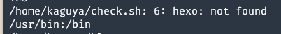

crontab定时任务神秘失效，原来是$PATH的锅
条评论前摇
与问题只有时间上的先后关系，不一定有因果关系
昨天晚上因为想发涩图，给服务器的PicUploader（校园网点此访问比较快）上传了一张30MB的文件，然后卡住了。检查了一下log，提示我：

于是用df -h检查了一下硬盘空间，发现 /var 分区只剩下 2.5 MB，存不下上传创建的临时文件了。。。
由于历史问题（其实就是当时脑瘫），分区的时候，只给 /var 分了 9GB （后来才知道其实根本不用单独分区），直接导致了本次事件。
由于对于脑瘫分区的不满，我尝试把/var, /tmp, /usr, /boot 全都合并到根目录下，但是看到一系列危险操作的时候还是怂了。。。
看了看整个 /var 分区，光 lib 目录就占了 6GB，好，就你了！登录到root，kill掉普通用户，
1 | mv /var/lib /usr/var/ |
把lib移动到别的地方然后创建了软链接。重新启动，一切正常。BW上传了涩图，心满意足地回去睡觉了。
发现问题
第二天晚上，BW发现，自己的博客访问不了了。
由于hexo常常被神秘kill，BW创建了一个cronjob，每分钟运行一次检查hexo服务器运行状态的脚本。
1 | if [ !$(pstree | grep hexo) ]; then |
原来，cron是能正常地维护hexo运行的。但是今天不知道抽了什么风，从service cron status能看到cron运行了这个脚本，但是hexo并没有被启动。
查看脚本的log，发现：
hexo命令就没找到。在脚本里加了一句echo $PATH，得到的结果居然是：

PATH神秘地不正常了。我检查了运行账户和 root 的 PATH, 都没有发现不正常的地方。甚至如果直接运行脚本，都是可以启动的。但唯独由 cron 运行的时候，PATH 就变了。
Google 了一下，发现 cron 本身会忽略 /etc/environment 文件（但是为什么之前不会呢，小声逼逼）
于是给定时脚本的头部重新声明了 PATH …
<EOF>